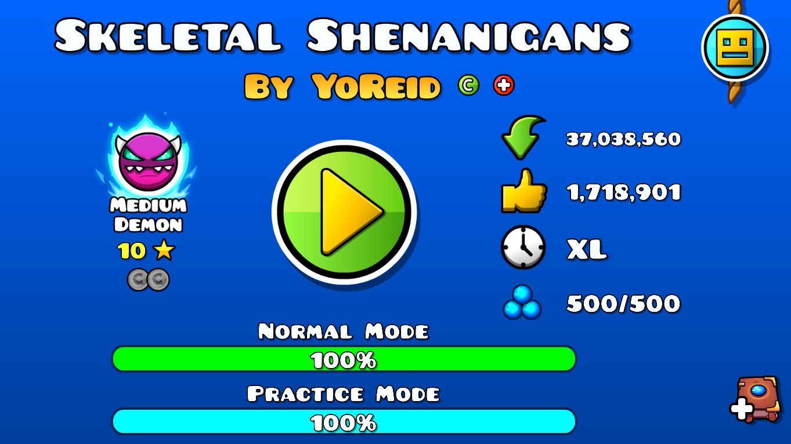
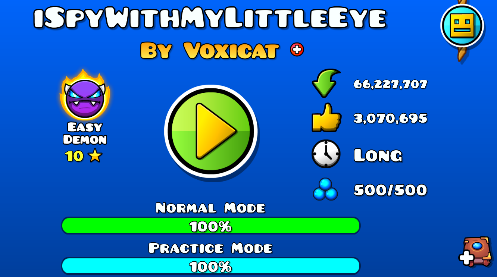
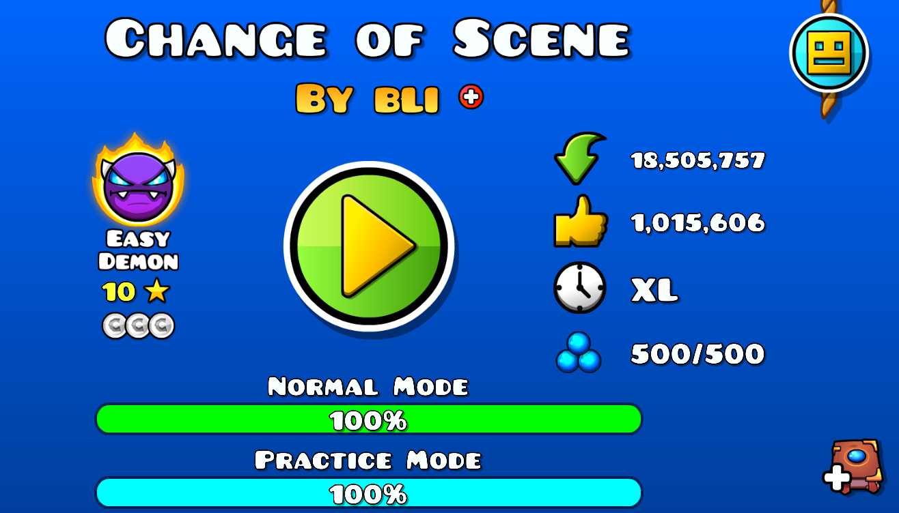

Skeletal Shenanigans

Difficulty: Medium Demon
Skeletal Shenanigans is a 2.2 Medium Demon Event level created by YoReid and
Airzyy. It is a
fantasy-themed level centered on evading a giant undead skeleton. It is the 15th Event level,
succeeding GD GANGSTER RAP and preceding Backbeat Revenge. Skeletal Shenanigans received acclaim for
its art, animation, music sync, and gameplay, and became the most downloaded and liked Medium
Demon level. The level received high popularity on social media platforms, with gameplay videos on
YouTube and TikTok amassing tens of millions of views.
I finished with a total of 4826 attempts!
More Info: https://geometry-dash-fan.fandom.com/wiki/Skeletal_Shenanigans
iSpyWithMyLittleEye

Difficulty: Easy Demon
iSpyWithMyLittleEye (commonly shortened to iSpy) is a 2.1 Easy Demon level
created and published by
Voxicat. It is one of the most critically-acclaimed levels of the late 2.1 era of Geometry Dash,
receiving praise for its unique effects, transitions and design. It is the fourth level of the
Cursed Gauntlet, after Deathstep III and before Death Moon. The level received high popularity on
social media platforms, with gameplay videos on YouTube and TikTok amassing tens of millions of
views.
I finished with a total of 1393 attempts!
More Info: https://geometry-dash-fan.fandom.com/wiki/ISpyWithMyLittleEye
Change of Scene

Difficulty: Easy Demon
Change of Scene is a 2.1 solo Easy Demon level created, verified and published by
bli. bli created
this level for the Discord Gauntlet Contest, hosted by Viprin, with the Top 10 best levels planned
to be included in two official gauntlets with five levels, each requiring all entries to have two
distinct modes, a normal mode and an alternate mode toggleable at the first five seconds of the
level. The level was released on 2 May 2023, around fifteen minutes before the contest deadline. The
level shifts through several themes: theatre, films, video games and simulation. An alternate mode
can be toggled on at the beginning of the level, adding bosses to many sections and altering the
designs and effects. The first mode intends to feel like pure fiction, with the second mode bringing
everything to life with more realistic designs.
Change of Scene won first place in the Discord Gauntlet Contest and became the
fifth and final
level of the Split Gauntlet, after Sinless Ash. Change of Scene received widespread acclaim for its
art, effects, decoration, gameplay, sync and optimization. In the Geometry Dash 10-Year Anniversary
presentation, the level was voted as most players' favourite level of all time, and at the
Geometry Dash 2023 Awards, the level won Best Easy Demon with a further Best Creator win for bli.
I finished with a total of 3259 attempts!
More Info: https://geometry-dash-fan.fandom.com/wiki/Change_of_Scene